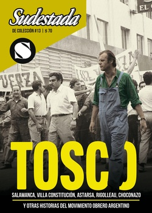

Buscar
“Resonará su voz hasta el confín de los tiempos”
Es el responsable de Tosco. Grito de piedra, la película documental que mejor define la experiencia obrera cordobesa a partir de la impronta del dirigente de Luz y Fuerza. Su trabajo invalorable permitió a nuevas generaciones, que jamás escucharon el vozarrón de Tosco en una asamblea o que no conocían siquiera su sonrisa, acercarse al mundo de sus ideas, a sus proyectos sindicales y a sus perspectivas políticas.
Edición Especial N° 13
TOSCO y el sindicalismo combativo
Sudestada de Colección
Comprar edición impresaSumario
- TOSCO. Diccionario gringo
- Un rompecabezas en clave naranja
- “Resonará su voz hasta el confín de los tiempos”
- René Salamanca. Una huella clasista
Compartir Articulo
Director y productor de cine y televisión, el rosarino Adrián Jaime aprendió las mañas del oficio documental mientras se desempeñaba como fotógrafo para el sindicato cordobés de Luz y Fuerza. En ese lugar, la sombra de Agustín Tosco es pura presencia. Por esa razón, se largó a la aventura de imaginar una película documental con el dirigente como gran protagonista. El estreno en 1998 de Tosco. Grito de piedra (que se completó en 2011 con Tosco, con muchos materiales de archivo extra), generó un impacto en el movimiento obrero cordobés: ahí estaba, en pantalla gigante, el obrero marxista que convocaba, desde todas las salas de cine, a la unidad como estrategia y a la revolución socialista como horizonte.
–¿Recordás cuál fue la primera noticia o comentario referido a Agustín Tosco que despertó tu curiosidad?
–Estudié en la Escuela de Aprendices de la Fábrica Militar de Aviones en Córdoba y luego trabajé en la línea de montaje como operario mientras estudiaba en la nocturna. Armé todos los timones de dirección del IA 63 Pampa. Allí, a fines de los ochenta, era imposible no hablar de las políticas públicas, ya que éstas atacaban todo avance social. Buscábamos entonces formas y modelos para la defensa de los puestos de trabajo y para ello nos organizamos de mil formas. La gavilla de políticos que por entonces gobernaba alardeaba con su ejemplo de vida: ¡sálvese quien pueda!
Contra todo eso había que enfrentarse en una pelea desigual y abrumadora. Era difícil que la figura de Agustín Tosco no sobrevolara las luchas del movimiento sindical en Córdoba. Así cuando tenía 15 o 16 me sumé a las organizaciones políticas populares que defendían la democracia y sus avances. Milité en aquellos años postdictatoriales por la recuperación de los centros de estudiantes, la federación de estudiantes secundarios, los Derechos Humanos en los barrios marginales y desde el primer al último año fui delegado y representante de mis compañeros. Recuerdo el día de estreno del film La Noche de los Lápices en Córdoba, organizamos con todo el cuerpo de Delegados de la escuela para ir masivamente al cine. Esa madrugada, la "mano de obra desocupada de la dictadura" hizo estallar una bomba en la sala... Allí supe lo que era remar contracorriente.
Hicimos las mil y una para cambiar el plan de estudios que, con una duración de ocho años, buscaba aplastar toda voluntad de egreso en los estudiantes trabajadores. Ese era el perfil de modelo educativo imperante desde los ochenta hasta los noventa. Un modelo caduco, expulsivo, improductivo, xenófobo y anacrónico. Una mierda, bah... Antes de recibir el título, logramos reducir el plan a cinco y seis años con la organización y participación de los pibes de la escuela. Desde allí, me acompaña la historia de Agustín Tosco.
–¿Cuáles fueron tus principales desafíos a la hora de pensar una película a partir de un personaje de la dimensión de Tosco?
–En la Universidad estudié cine. Al tiempo, ingresé a trabajar como fotógrafo de la Secretaría de Prensa del Sindicato de Luz y Fuerza Córdoba. Allí se gestaba la resistencia al intento privatizador de la Empresa Provincial de Energía. Una lucha increíble que jamás olvidaré. En ese marco me planteé hacer la tesis con un film sobre la experiencia de la dirigencia sindical honesta que propició el Cordobazo y Tosco era el protagonista indiscutible.
Usamos archivos inéditos recuperados que no eran exhibidos desde fines de los sesenta; usamos audios de discursos, animaciones basadas en Ricardo Carpani, un trabajo contrarreloj para estrenarse el 5 de Noviembre en Luz y Fuerza, donde no cabía un alfiler y esa experiencia se multiplicó por todo el país. A las funciones de Tosco. Grito de piedra asistieron miles de personas y, sin embargo, nunca obtuve recursos del INCAA para hacer el film ni para un carajo. Ni en aquel entonces ni posteriormente, cuando volví a presentar mi propuesta. Igual no me achiqué e hice un film de 90 minutos de puro archivo del cual me enorgullezco: Tosco.
Obviamente eso repercutió en la imposibilidad de reinvertir en otros films dificultando gravemente la consecución del trabajo productivo. Para este tipo de labor artesanal y documental no hay políticas federales, ni productivas que distribuyan equitativamente las oportunidades de trabajo entre los realizadores/as de todo el país.
–¿Qué elementos de su vida te generaron mayor interés y cuáles de ellos te interesaron destacar durante el proceso de investigación?
–De Tosco me impactó su honestidad, la amplitud de criterios, el estudio autodidacta, el esfuerzo personal en el trabajo colectivo, la solidaridad con el otro, la defensa de los derechos humanos, su férreo coraje, su martirio y el acompañamiento popular que demostró mil veces su lealtad a este glorioso hijo del pueblo.
La nota completa en la ediciòn gráfica de Sudestada de colección Nº 13
Comentarios

Sudestada
El colectivo de Revista Sudestada esta integrado por Ignacio Portela, Hugo Montero, Walter Marini, Leandro Albani, Martín Latorraca, Pablo Fernández y Repo Bandini.
Articulos más vistos


LIBRERÍA SUDESTADA

Colección infantil

Distribuidora de Libros

Suscripción

Sudestada en URUGUAY

Otros articulos de esta edición
René Salamanca. Una huella clasista
Fue el dirigente clasista más importante del gremio metalúrgico. En un extraordinario proceso unitario y combativo, consiguió torcerle el brazo ...
TOSCO. Diccionario gringo
Definiciones, recuerdos, opiniones y comentarios del dirigente sindical a lo largo de una vida marcada por el compromiso con la ...
Un rompecabezas en clave naranja
Fue dirigente de uno de los procesos de construcción sindical más importantes de la provincia de Buenos Aires. Desde la ...